SQL · Python · Power BI · Machine Learning.
I turn raw data into decisions — building dashboards, machine-learning models
and AI tools across healthcare, retail, finance and sports.
Across AI, healthcare, retail and sports — each project takes raw data and ends in something usable: a prediction, a dashboard, or a clear recommendation.
An AI platform that designs brand-new antimicrobial peptides. It uses the ProtGPT2 large language model to generate new peptide sequences and ESMFold to predict their 3D structure.
Each candidate is scored on a 21-parameter framework built from peer-reviewed research, with Groq AI (Llama 3.3) and REST APIs tying it into one end-to-end pipeline — my MSc research project.
A machine-learning app that shows a chasing team's win chance at any moment of an IPL game — built from 138,000+ match situations across 1,100+ matches.
An early version showed 99% accuracy, which was too good to be true. I found the cause (data leakage) and fixed it by testing only on matches the model had never seen. Honest result: 0.865 AUC.
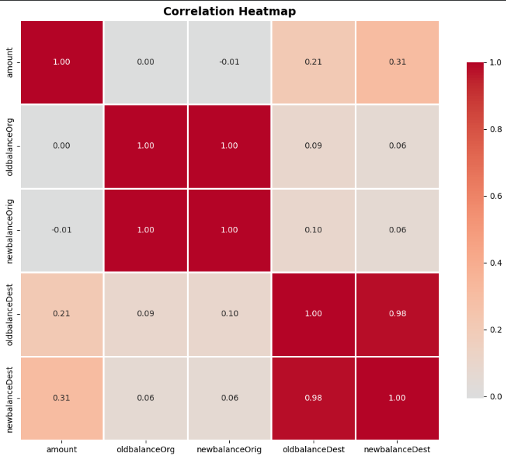
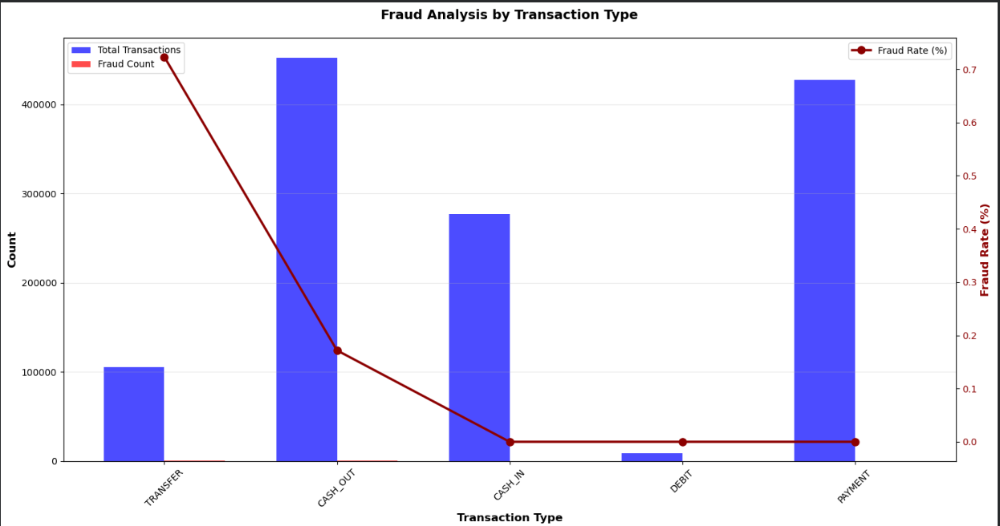
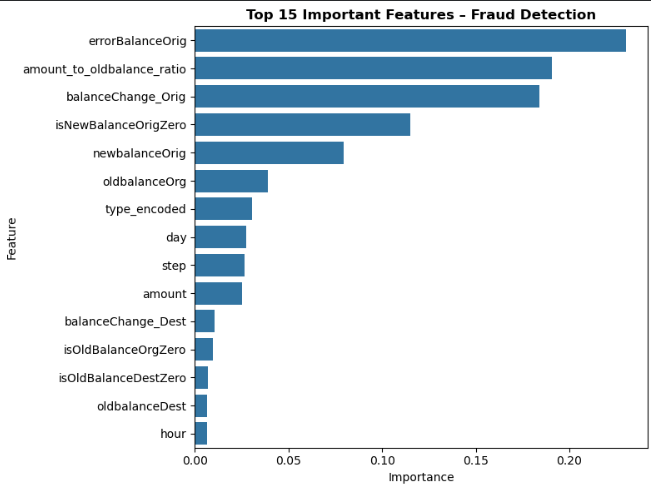
A machine-learning system that flags fraudulent transactions in a dataset of 1.27M financial transactions (only 0.16% fraud). I engineered 11 features, handled the severe class imbalance with SMOTE, and compared Logistic Regression against Random Forest.
The final Random Forest catches 98.96% of frauds at 96.95% precision (ROC-AUC 0.997) — just 12 false alarms and 4 missed frauds across 317K test transactions. Top signals: balance errors, amount-to-balance ratio, and account-emptying behaviour.
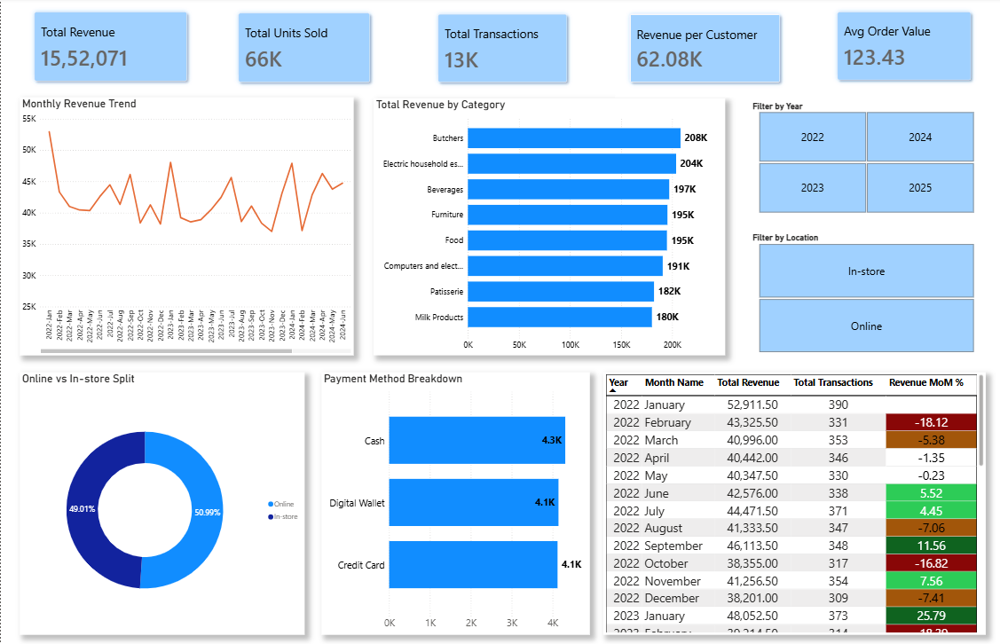
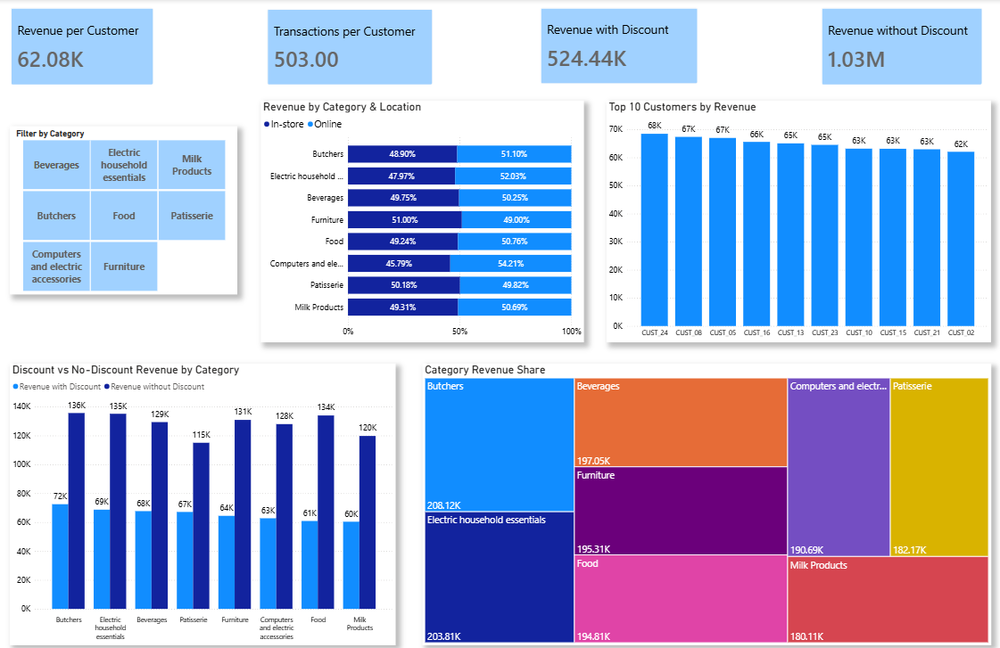
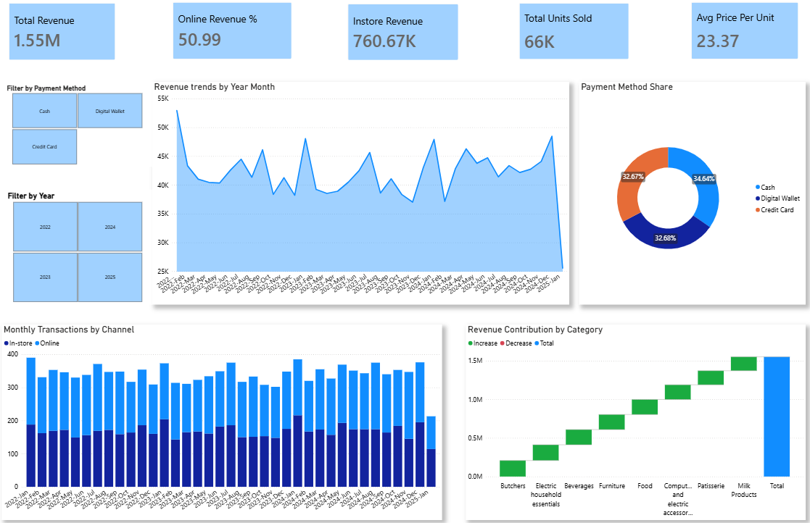
An interactive report analysing ₹1.55M in revenue across 13K transactions and 8 product categories — monthly revenue trends, the online vs in-store split, payment methods, and discount vs full-price revenue.
Includes a month-over-month growth table, top-10 customers, and category revenue share — a clear view of what's selling, where, and how it's trending.
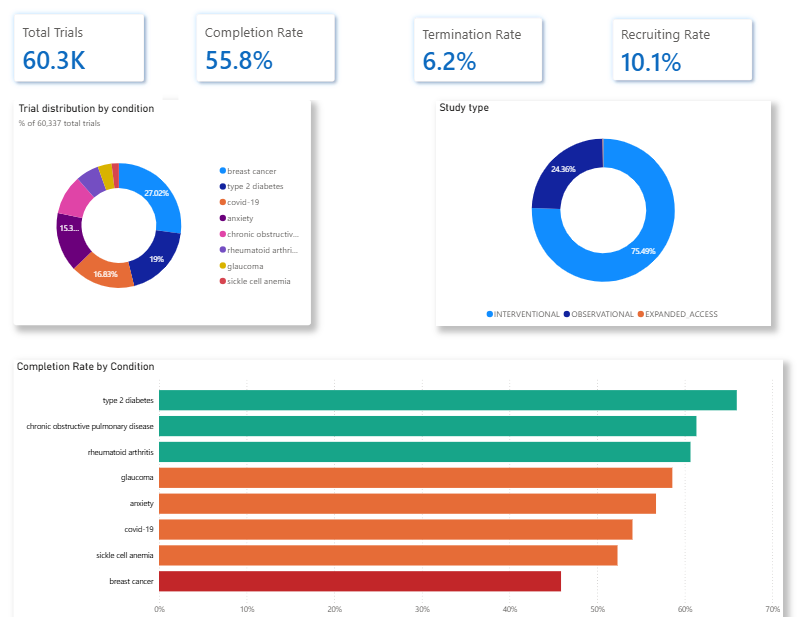
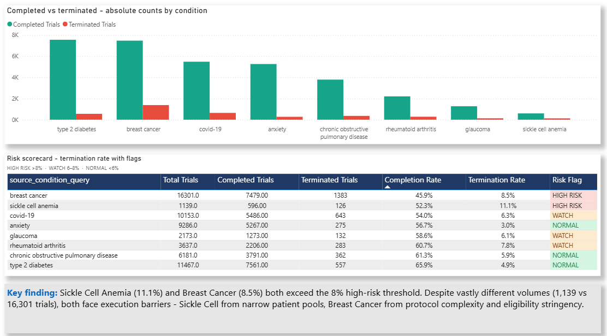
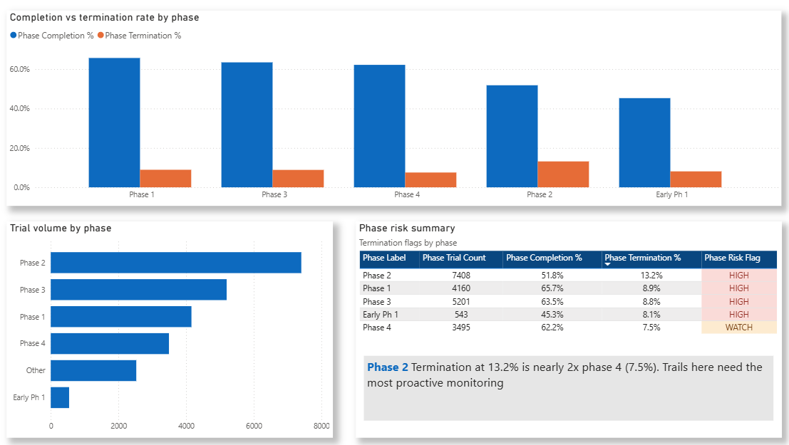
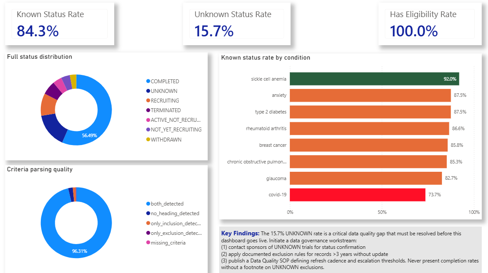
A healthcare analytics report on 60,000+ clinical trials, measuring completion and termination rates by condition and phase. A risk scorecard flags high-termination areas — Sickle Cell Anaemia (11.1%) and Breast Cancer (8.5%) both cross the 8% risk line.
It also surfaces a data-quality gap: 15.7% of trials have an unknown status — a problem to fix before the numbers are trusted.
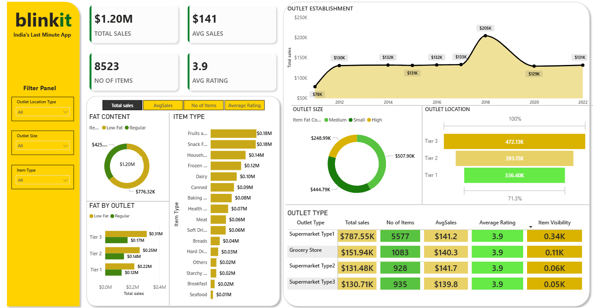
A sales-performance dashboard for a grocery-delivery business covering $1.2M in sales across 8,500+ items — broken down by outlet type, size and tier-city location, plus item category and fat content.
KPIs for average sales, item count and average rating (3.9), with an item-visibility view showing which outlets and products drive the business.
A tool that answers a hard call: which bowler to use against which batter in the final overs. You give it a batter, two bowling options and the match state, and it returns the risk for each choice and a recommendation.
Built from 20,000+ death overs, with features in strict time order so the model never sees the future (no leakage). It reports an honest edge — AUC ~0.64.
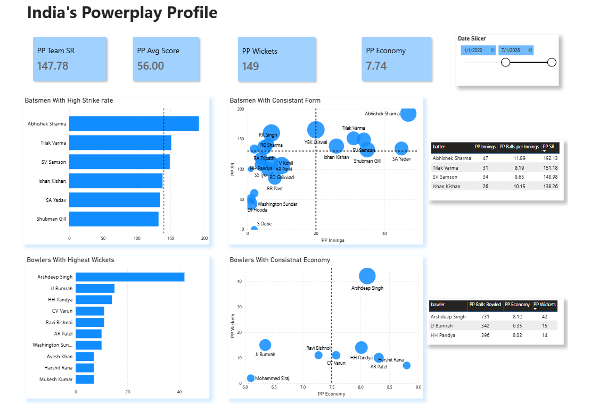
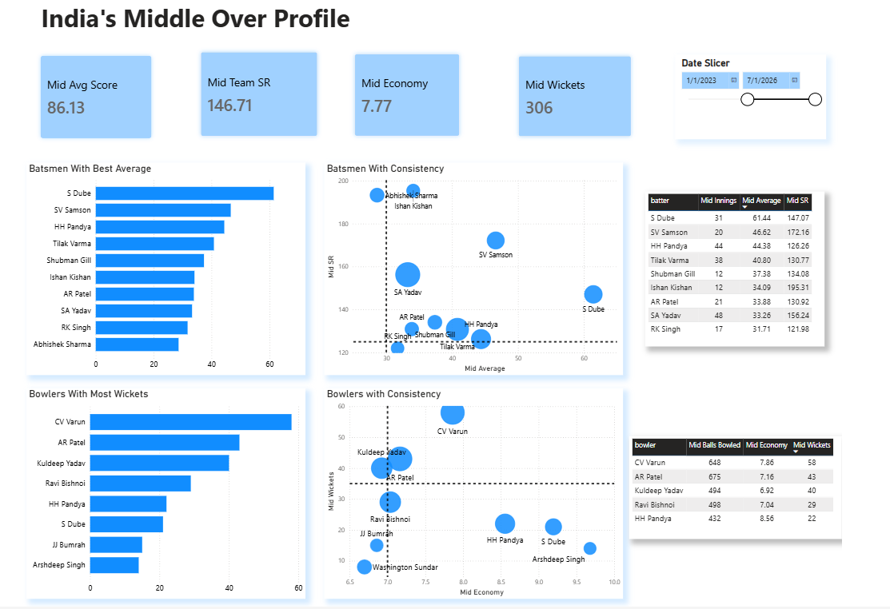
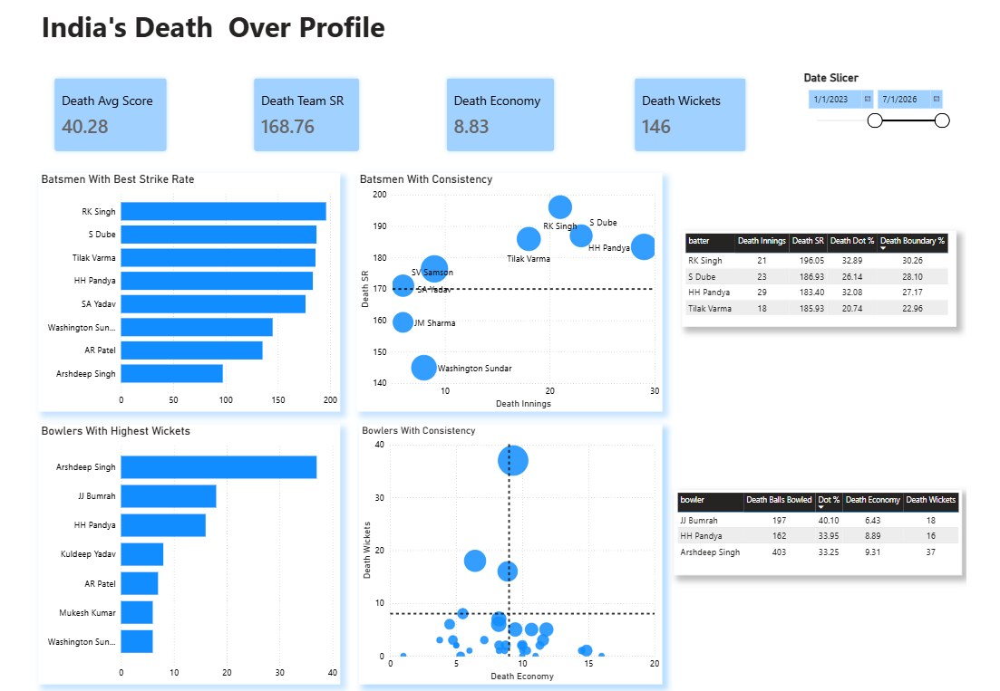
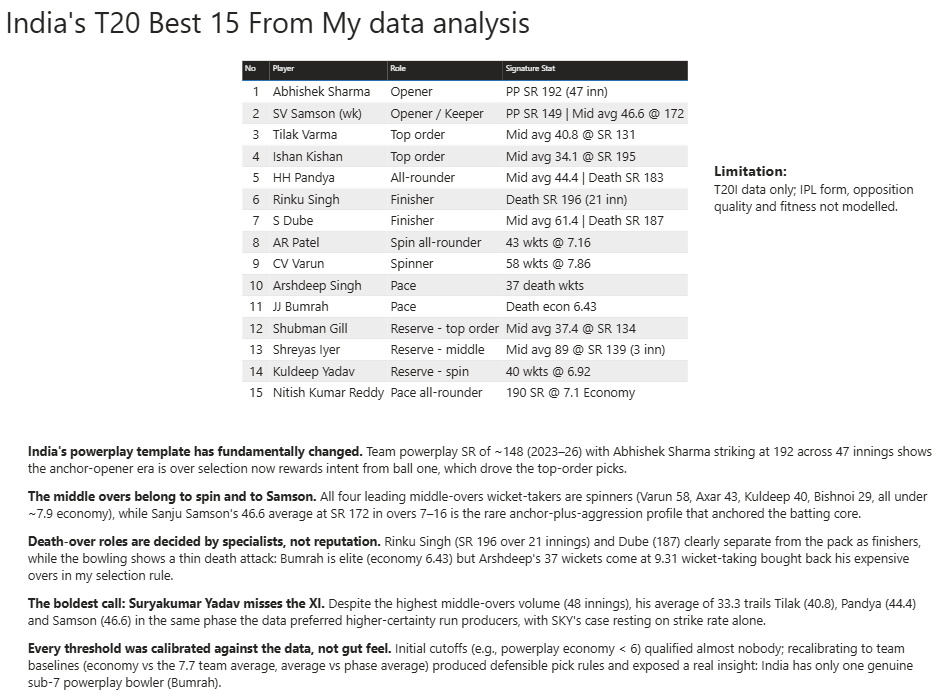
A 4-page Power BI report that picks a best T20 squad using 62,000+ deliveries (269 matches) and ~30 DAX measures. Instead of judging whole careers, it scores every player in the three phases a T20 is won in — powerplay, middle overs and death.
Bold, data-backed call: a big-name middle-order batter is left out because his average (33.3) trails others in the exact phase he's known for.
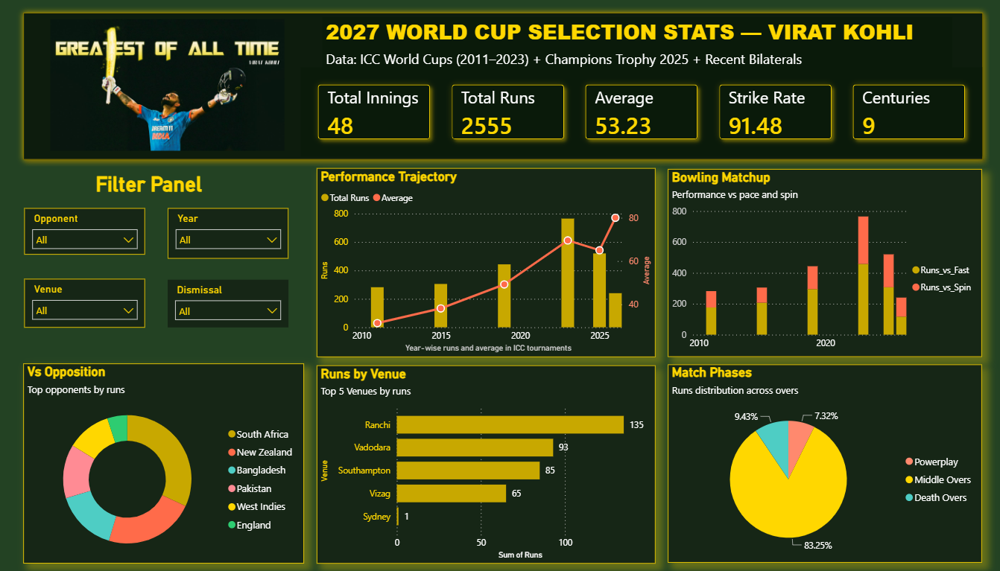
An interactive Power BI dashboard analysing Virat Kohli's ICC-tournament career — 2,555 runs across 48 innings at a 53.2 average — with KPI cards driven by advanced DAX measures.
Five views: year-by-year form, pace-vs-spin matchups, best opponents, best venues, and a batting-phase split, all with dynamic filters and drill-through.
Additional data-analysis and machine-learning projects — code and write-ups on GitHub.
A pure-SQL analysis of 17,000+ IPL 2025 deliveries to build a statistically optimal Dream XI, using window functions, CTEs and ranking.
GitHub →EDA of the 2015 World Happiness Report across 158 countries — found economy and family are the biggest drivers of happiness.
GitHub →Excel analysis of call-centre performance — call volume, satisfaction and revenue — showing 70% of revenue came from high-value customers.
GitHub →I like problems where the answer is hidden in the data — my job is to pull it out and make it usable.
Across retail, healthcare and sports, I follow the same path: clean the data, question it, model it, and turn it into a dashboard or number someone can act on. I care about honest analysis — validating models properly and being clear about their limits.
I'm an MSc Data Science student, self-driven, and comfortable picking up a new domain fast. That mix of curiosity and rigour is what I bring to every dataset.
The full chain: collect → clean → model → visualise → decide.
Window functions, CTEs and complex joins — turning large, messy raw tables into clean, analysis-ready data.
pandas · scikit-learn · data pipelines. Parsing raw data, feature engineering and honest model validation.
Multi-page reports, 30+ measure models, KPIs, drill-through and interactive filters that people actually use.
Classification, calibration and honest evaluation — proper train/test splits and clear reporting of limits.
Comfortable across retail, healthcare, sports and gaming data — I learn the business context quickly.
Turning numbers into clear findings and dashboards that decision-makers can act on with confidence.
Looking for Data Analyst / Data Science roles where I can turn data into decisions.